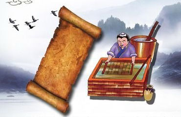
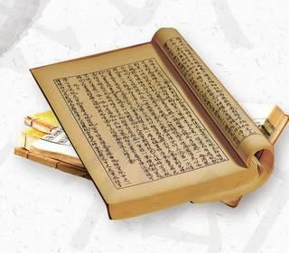

|
 |
 |
 |
造纸术

造纸术：文明传承的载体
造纸术的发明，解决了早期书写材料（如竹简笨重、丝绸昂贵）的根本问题。
关键演进：西汉时期我国已发明了植物纤维纸，但质地粗糙，不便书写。到了东汉，蔡伦改进了造纸工艺，采用树皮、麻头、破布和旧渔网等廉价原料，制造出质地优良、便于书写的纸张，史称“蔡侯纸”。
世界贡献：造纸术的推广极大地降低了知识传播的成本，为中华文化的繁荣提供了物质基础，后来通过阿拉伯世界传入欧洲，取代了昂贵的羊皮纸，为欧洲文艺复兴和思想解放奠定了重要基础。
